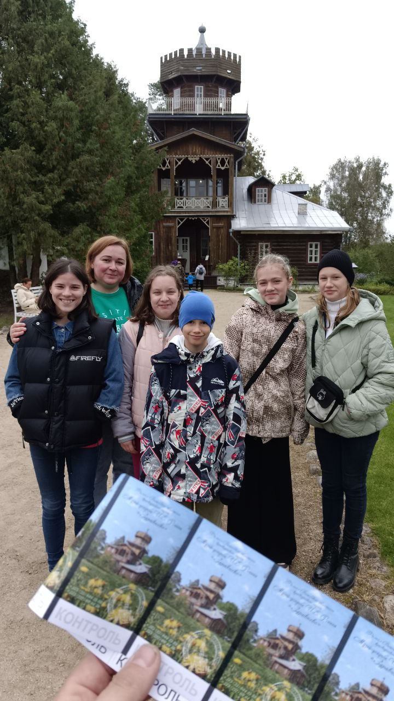

Музей-усадьба И. Е. Репина «Здравнёво»

Музей-усадьба "Здравнёво", посвященная жизни и творчеству выдающегося художника Ильи Ефимовича Репина, находится в Витебском районе Витебской области, вблизи деревни Койтово (около 16 км от Витебска). Этот музей является частью Витебского областного краеведческого музея.
История
В 1892 году Илья Репин, продав свою знаменитую картину "Запорожцы пишут письмо турецкому султану", приобрел небольшое имение под Витебском. Первоначально известное как "Софиевка" или "Дровнёво", оно впоследствии получило название "Здравнёво".
С 1892 по 1904 год Репин использовал "Здравнёво" как свою летнюю резиденцию. Он перестроил главный дом, разбил сад, посадил липовую аллею, создал пруд и благоустроил территорию. Именно здесь художник создал множество картин, эскизов и рисунков, включая такие известные работы, как "Лунная ночь", "Дуэль" и "Осенний букет".
После революции усадьба пришла в упадок, и к середине XX века дом был почти полностью разрушен. В 1988 году, благодаря сохранившимся фотографиям и чертежам, усадьбу восстановили, и на её базе открылся музей. В 1995 году здание пострадало от пожара, но было отреставрировано и вновь открыто для посетителей в 2000 году.
Сегодня музей-усадьба включает в себя:
- главный усадебный дом, где размещена основная экспозиция;
- дом управляющего (выставочный зал);
- старинный погреб;
- липовую аллею и часть парка, посаженных при жизни Репина.
Экспозиция музея знакомит посетителей с жизнью и творчеством Репина в период его пребывания в Беларуси. Здесь представлены личные вещи семьи художника, предметы быта конца XIX - начала XX веков, репродукции картин, документы и архивные материалы.
На территории музея регулярно проводятся выставки, экскурсии, культурные мероприятия и пленэры для художников.
Пройди тест для закрепления результата.
Тест